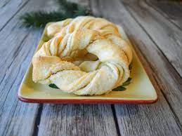
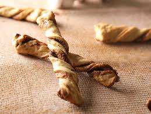

Sour Cream Twist Pastry


Description
My grandmother used to make these every year for Christmas, though she is
gone I have happily carried on that tradition.
Ingredients
- 1/4 tsp granulated sugar
- 2-1/4 tsp (1 pkg) active dry yeast (not quick rise)
- 1/4 cup warm water
- 3/4 cup sour cream
- 1/4 cup granulated sugar
- 1 large egg
- 2 large egg yolks
- 2 tsp vanilla extract
- Zest of 1 large orange
- 3-3/4 cup all purpose flour
- 1 tsp salt
- 1/2 cup shortening, cubed
- 12 cup unsalted butter, cubed
- 1 cup sugar, divided into portions
Instructions
Make Dough
-
In a small bowl, dissolve the sugar and yeast with warm water (~110
degrees). Set aside for 15 minutes.
-
In a medium bowl, whisk together sour cream, sugar, eggs, vanilla and
orange zest. Set aside.
-
In a large bowl (or food processer) mix flour and salt. Cut butter and
Shortening into flour mixture until it looks slightly coarse.
- Add yeast mixture and combine thoroughly.
-
Add sour cream mixture and combine thoroughly until dough pulls away
from sides to form a ball.
-
Place dough into a large bowl, cover and chill for minimum 8 hours.
Overnight is best.
Assembly
-
Preheat oven to 350F. Position rack in center of oven. Prepare 2 large
baking sheets, lined with parchment paper. Remove dough from
refrigerator and divide in half, return half to refrigerator.
- Generously sprinkle approx. 1/4 cup sugar onto clean surface.
-
Press dough into a rectangle. Roll out and flip over to roll again.
Sprinkle sugar as you go to prevent sticking. Once the dough measures an
8x16 inch rectangle, sprinkle 1/4 cup sugar over the dough's surface.
Fold one end to the center and the other end over the first. Roll out
again to a 8x16 inch rectangle.
-
On the longest width, divide dough evenly into 16 sections. Gently grab
each strip in the center and narrowly twist out to opposite ends. If
desired, pinch ends together into circle.
-
Bake for 18 minutes, or until the edges just start to turn light brown
and caramelized.
- repeat for remaining half of dough.